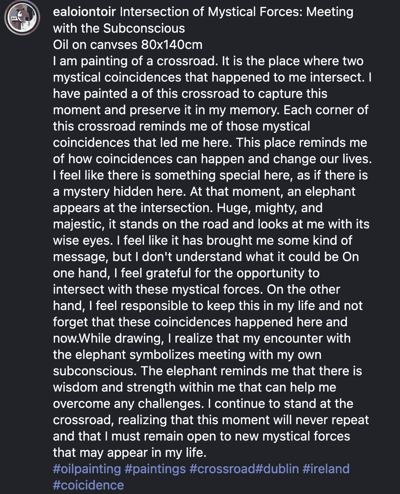
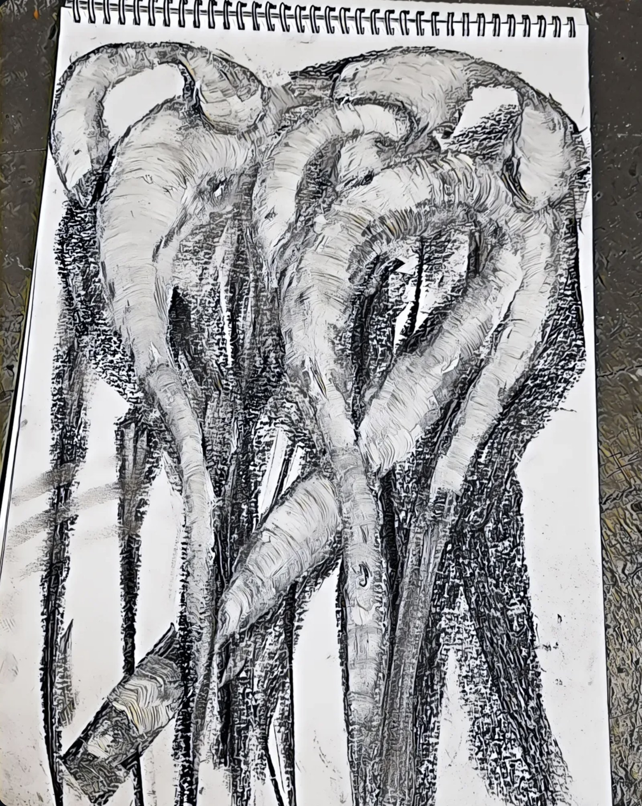
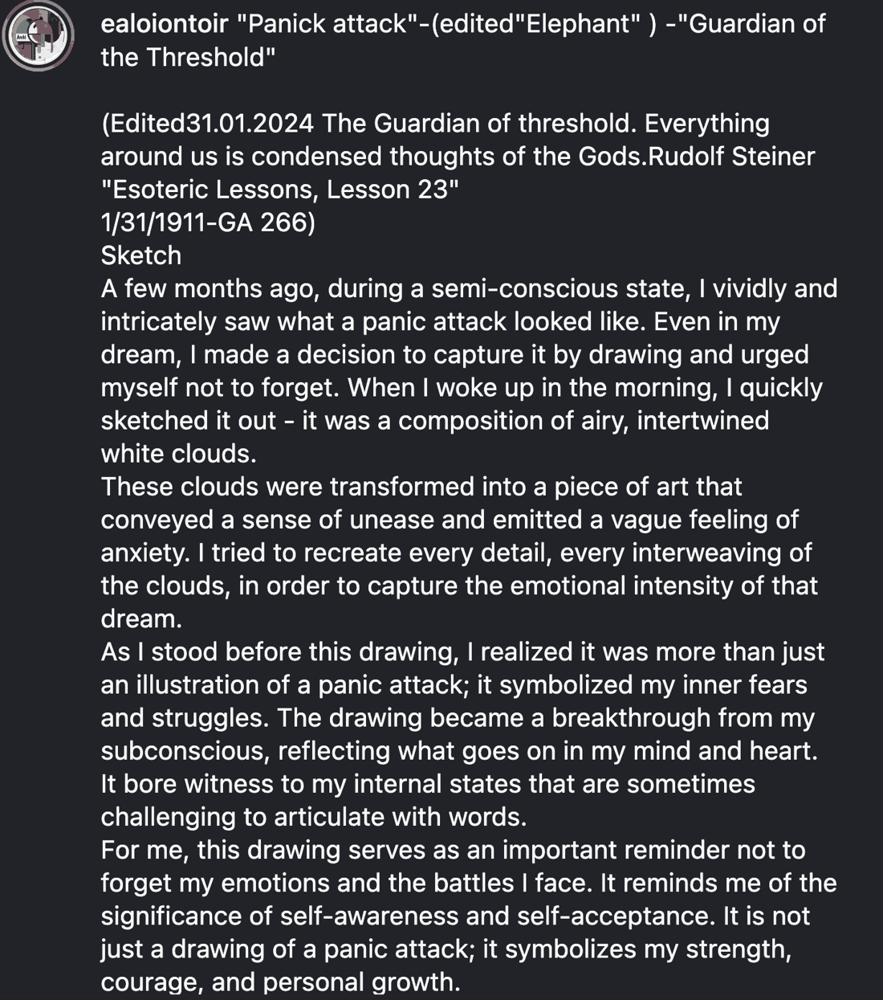
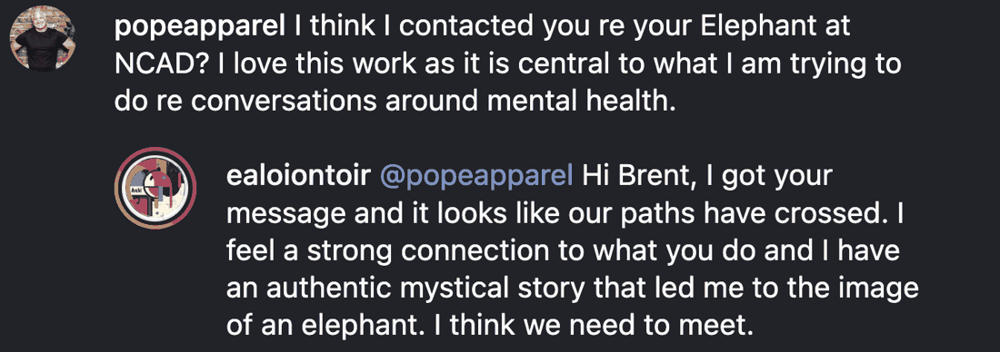

IThe crossing
Dorset Street meets Blessington Street in north Dublin. On 29 November 2021 at about 10.38 I photographed a man sitting on the steps there. His hands were trembling.
The next morning at about 10.25 I passed the same spot. A man stood pressed into a doorway between railings and black rubbish bags. I recognised him at once. Twenty five years earlier he used to come into the boutique in Riga where I worked. Since then I had seen him twice in Brown Thomas in Dublin.
Now he stood where a stranger had trembled the day before. This time my hands trembled.
The photographs keep their original file names and times. The full account is in the film Trembling on Dorset Street.
IIThe returned wallet
Some time later I went to a flea market outside Dublin. I bought a bundle of papers there. Letters, documents and tickets of a woman I never knew.
That same day I lost my wallet. Seven to eight hundred euro and my documents were inside. I did not expect to see it again.
In the evening the Gardaí called. A stranger had handed it in. The money was untouched. I found him to thank him. His name is Osman. We met near the Mater Hospital.
Only later did I notice the geography. From that corner the Dorset Street crossing is in view. The same few hundred metres now held two opposite scenes. A man in decline on the steps. A stranger returning what was not his.
IIIThe elephant
In April 2023 I painted that crossing. On 16 April 2023 I wrote that this place reminds me how chances can meet and change a life. Then an elephant appears at the crossroads. Huge and calm. It looks at me as if it has brought a message I cannot read.
The elephant was my measure of the improbable. To meet two such coincidences on one corner felt as unlikely as meeting an elephant there. So I painted the elephant.


IVThe panic attack
The panic attacks came first. My father died. My stepfather Oleg died on 22 February 2022. My grandmother had a stroke.
I think my ego met death for the first time. Not as an idea. As an event in the body. I did not understand what was happening. I thought devils were running around inside me. Then I began to study it. In the same way I would later have to study synchronicity. The panic was the forerunner. The coincidences came close behind.
Then one evening I was falling asleep. In the half sleep I saw it clearly. Inside the dream I knew with certainty that this is what a panic attack looks like. The forms were made of smoke. Airy, intertwined, white.
The strange part is the feeling. It was not fear. It was lightness. Still half asleep, I threw it down on paper quickly because I could see it so plainly. The sketch did not keep the lightness. It kept the form.
In the morning I saw what I had drawn. I came into college and said this is what a panic attack looks like. I remember that moment exactly.
While I drew it I saw no elephants. That is what still surprises me. Later I looked again. It was made of nothing but elephants.


Such things happen to me often with sleep. Only recently have I learned to record them as they come.
VThe Elephant in the Room
The elephant painting hung at my graduate show at NCAD in 2023. A man wrote to me. He wanted that painting.
I answered that I do not sell my paintings. I feel I would lose the connection if I did.
Then he found the panic attack sketch. He wrote under it.

The man was Brent Pope. Former rugby international, broadcaster and psychotherapist. Founder of Elephant in the Room. It is an Irish movement that places hand painted elephant sculptures in schools, universities and workplaces so that mental health can be spoken about out loud. The elephant in the room is the thing everyone sees and nobody names.
That is the miracle of it. The man drawn to my elephant had built a whole movement around the elephant. The drawing he wrote under was my panic attack. He said this work is central to what he is trying to do.
I wrote back that our paths had crossed. That I had a mystical story that led me to the image of an elephant. That we needed to meet.
We never met. I do not know why. The thread stayed open. The energy kept circling.
VISequelism
A word came to me in a dream. As I woke I saw it written in my notebook. Its meaning arrived later, through a coincidence.
Sequelism. The principle that later events change the meaning of chapters already lived, and even their description. A chapter is never closed. A sequel can rewrite its first page.
This case is sequelism in its plainest form. The elephant painting existed before I knew Brent Pope. The panic sketch existed before I saw its elephants. Each later event changed what the earlier image was.
VIIA fractal reading
In her foreword to your book Terry Marks-Tarlow writes that a fractal repeats the pattern of the whole in its parts. Here one image repeats on three scales.
She also writes that your invitation to her came out of the twilight zone between sleep and waking. My panic sketch and my dream word came out of the same zone.
I do not claim this explains anything. I only note that the shape repeats.
VIIIWhat is documented
| Element | Trace | Status |
|---|---|---|
| Dorset Street, 29 and 30 November 2021 | Original photographs with time stamps. Film. | Documented |
| Recognition of the man from Riga | A former colleague in Riga recognised him from the photograph. | Witness |
| Returned wallet, Osman, Mater Hospital | Garda call. My memory. Exact date to be confirmed. | Partly |
| Elephant concept | Dated written note, 16 April 2023. Same text in the Instagram caption. | Documented |
| Elephant painting shown at NCAD | Instagram post, 4 June 2024. Brent Pope's comment names it. | Documented |
| Panic attack sketch | Instagram post, 12 June 2023. Caption edited 31 January 2024, title changed to Elephant and Guardian of the Threshold. | Documented |
| Evening or morning drawing | My account is evening, half asleep, seen in the morning. The 2023 caption, written months later, says on waking. | Two versions |
| Telling the college next morning | My memory. Classmates or tutors could confirm. | Witness possible |
| Brent Pope's interest and words | Public Instagram comment, June 2023, and my reply. | Documented |
| That the elephants in the sketch were not intended | My own report. The later retitling supports the order. | Not verifiable |
I do not know what this was.
I know how it happened.